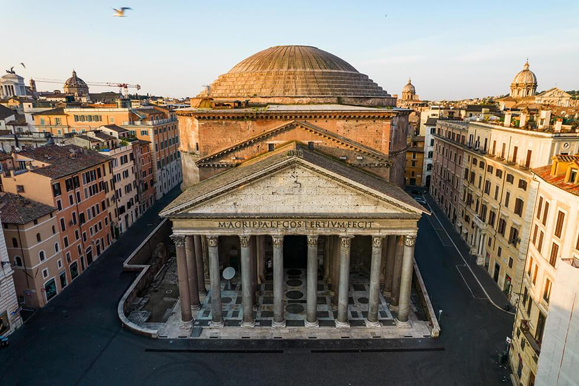
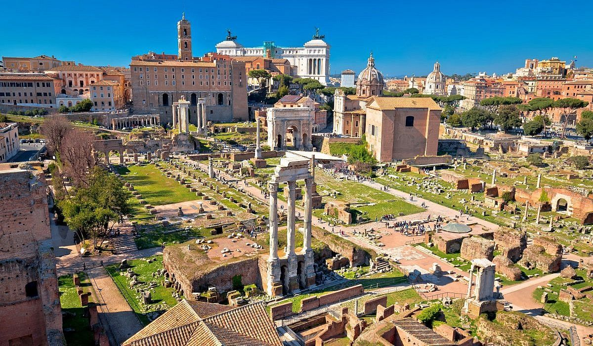

01
Italia · Lazio · 41° 54′ N
Eine Stadt, die Zeit nicht misst,
sondern erzählt.
Rom ist kein Museum. Es ist ein täglicher Dialog zwischen antiken Säulen, lauten Motorrollern und dem Duft von frisch gebackenem Cornetto.
In der italienischen Hauptstadt liegt Geschichte nicht nur hinter Glas, sondern auf jedem Platz, in jeder Gasse und am Tisch der nächsten Trattoria. Nimm dir Zeit, dich zu verlaufen — genau dort beginnt das echte Rom.



Zwischen Tempeln und Triumphbögen dem politischen Herz der Antike begegnen.
Mehr erfahren ↗Zeiten können sich saisonal ändern. Prüfe vor dem Besuch die offiziellen Websites.
Offizielle Tourismus-Info ↗| Ort | Öffnungszeit | Eintritt |
|---|---|---|
| Kolosseum | 08:30 – 19:15 | ab 18 € |
| Trevi-Brunnen | Immer geöffnet | Kostenlos |
| Pantheon | 09:00 – 19:00 | ab 5 € |
| Forum Romanum | 08:30 – 19:15 | ab 18 € |
Stehend an der Bar, wie die Römer es machen.
Zwei Jahrtausende Geschichte auf einem Spaziergang.
Knusprige Reiskroketten und eine kleine Pause am Tiber.
Durch die Gassen treiben lassen und Brunnen zählen.
Der Tag endet dort, wo das Leben beginnt: draußen.